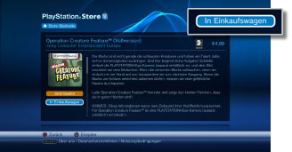
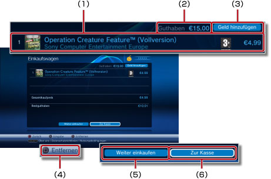
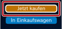
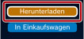
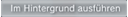
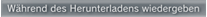
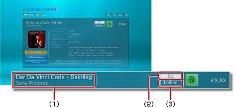

PlayStation®Network > Herunterladen (Kaufen) von Produkten
Herunterladen (Kaufen) von Produkten
Sie müssen eventuell die System-Software aktualisieren, bevor Sie diese Funktion verwenden können.
Sie können im  (PlayStation®Store) angebotene Produkte wie Spiele, Zubehör zu Spielen oder Videoinhalte (gekauft oder kostenlos) herunterladen. Wenn Sie Produkte (gekauft oder kostenlos) von (PlayStation®Store) herunterladen möchten, müssen Sie ein PlayStation®Network-Konto erstellen.
(PlayStation®Store) angebotene Produkte wie Spiele, Zubehör zu Spielen oder Videoinhalte (gekauft oder kostenlos) herunterladen. Wenn Sie Produkte (gekauft oder kostenlos) von (PlayStation®Store) herunterladen möchten, müssen Sie ein PlayStation®Network-Konto erstellen.
1. |
Wählen Sie |
||||||||||||
|---|---|---|---|---|---|---|---|---|---|---|---|---|---|
2. |
Wählen Sie das Produkt aus (gekauft oder kostenlos), das Sie vom |
||||||||||||
3. |
Wählen Sie [In Einkaufswagen].  |
||||||||||||
4. |
Wählen Sie [Einkaufswagen anzeigen], um den folgenden Bildschirm aufzurufen. 
|
||||||||||||
5. |
Wählen Sie [Zur Kasse]. |
||||||||||||
6. |
Wählen Sie [Kauf bestätigen]. |
||||||||||||
7. |
Wählen Sie den Artikel aus, den Sie herunterladen wollen. |
Anmerkungen
- Welche Produkte im (PlayStation®Store) erhältlich sind, hängt vom Land oder der Region ab. Beachten Sie, dass Sie nur auf den (PlayStation®Store) für das Land bzw. die Region Ihres PlayStation®Network-Kontos zugreifen können.
- Informationen zu den Produkttypen, die Sie vom (PlayStation®Store) herunterladen können (gekauft oder kostenlos), und zu nach dem Kauf verfügbaren Services finden Sie auf der SCE-Website für Ihre Region.
- Wenn Sie für einen Artikel, den Sie kaufen möchten, in Schritt 3 die Option [Jetzt kaufen] auswählen, können Sie die Seite mit dem Einkaufswagen überspringen und direkt zum Bestellbestätigungsbildschirm (Schritt 6) wechseln. Wenn für Ihr PlayStation®Network-Konto Kreditkarteninformationen registriert sind und das Guthaben in Ihrer Brieftasche für den Kauf nicht ausreicht, wird automatisch ein Betrag zu Ihrer Brieftasche hinzugefügt.

- Wenn Sie bei einem kostenlosen Artikel [Herunterladen] wählen (Schritt 3), wird die Seite mit dem Einkaufswagen übersprungen und stattdessen wird direkt der Bildschirm zum Herunterladen angezeigt (Schritt 7).

- Wenn die Anmelde-ID (E-Mail-Adresse) nicht richtig ist (oder keine gültige E-Mail-Adresse ist), wird die Bestätigungsnachricht nicht empfangen. Verwenden Sie beim Registrieren der Anmelde-ID eine gültige E-Mail-Adresse, unter der Sie Nachrichten empfangen können. Zum Ändern der Anmelde-ID wechseln Sie zu
 (PlayStation®Network) und wählen
(PlayStation®Network) und wählen  (Konto-Verwaltung) >
(Konto-Verwaltung) >  (Kontoinformationen) > [Anmelde-ID (E-Mail-Adresse)]. Gehen Sie zum Vornehmen von Korrekturen nach den Anweisungen auf dem Bildschirm vor.
(Kontoinformationen) > [Anmelde-ID (E-Mail-Adresse)]. Gehen Sie zum Vornehmen von Korrekturen nach den Anweisungen auf dem Bildschirm vor. - Manche heruntergeladene (gekaufte) Inhalte vom (PlayStation®Store) können nur von Geräten verwendet werden, die mit dem PS3™-System aktiviert wurden, wie z. B. ein anderes PS3™-System oder ein PSP™-System. Zum Aktivieren bzw. Deaktivieren eines Geräts wählen Sie (Konto-Verwaltung) unter (PlayStation®Network) und dann
 (Systemaktivierung). Gehen Sie zum Abschließen des Vorgangs nach den Anweisungen auf dem Bildschirm vor.
(Systemaktivierung). Gehen Sie zum Abschließen des Vorgangs nach den Anweisungen auf dem Bildschirm vor. - Wenn beim Herunterladen

auf dem Bildschirm angezeigt wird, können während des Herunterladens andere Funktionen ausgeführt werden. Wählen Sie , um wieder zum vorherigen Bildschirm zu wechseln, während das Herunterladen weiter ausgeführt wird. Einzelheiten dazu finden Sie unter (Netzwerk) >
(Netzwerk) >  (Download-Management) > [Herunterladen im Hintergrund] in diesem Handbuch.
(Download-Management) > [Herunterladen im Hintergrund] in diesem Handbuch. - Wenn während eines Downloads

auf dem Bildschirm angezeigt wird, kann das Video während der Wiedergabe heruntergeladen werden. Wenn Sie wählen, wird (PlayStation®Store) geschlossen und die Wiedergabe des Videos wird gestartet.
Im Video-Shop erhältliche Inhaltstypen
Im Video-Shop von PlayStation®Store sind zwei Typen von Videoinhalten erhältlich. Sie können Produkte (gekauft oder geliehen) vom Video-Shop genauso herunterladen wie vom Spiele-Shop von PlayStation®Store.

(1) |
Name des Inhalts |
||||
|---|---|---|---|---|---|
(2) |
Auflösung des Videos |
||||
(3) |
Gibt an, ob der Inhalt zum Leihen oder Kaufen ist
|
Wie die Wiedergabedauer eingeschränkt ist, wann Inhalte heruntergeladen werden können und welche Typen von herunterladbaren Inhalten zur Verfügung stehen, diese Faktoren hängen alle vom Land bzw. der Region ab, von dem aus Sie auf PlayStation®Store zugreifen.
Anmerkungen
- Der Video-Shop im PlayStation®Store steht nur in einer begrenzten Anzahl von Ländern und Regionen zur Verfügung. Die unterstützten Sprachen sind ebenfalls begrenzt und die zur Verfügung stehenden Servicetypen variieren je nach Region. Weitere Informationen dazu erhalten Sie beim technischen Support für Ihre Region.
- Im Video-Shop gekaufte oder geliehene Inhalte dürfen während des autorisierten Nutzungszeitraums nur einmal heruntergeladen werden. Das erneute Herunterladen von Inhalten ist ohne erneuten Kauf nicht zulässig.
- Sie können Videoinhalte nur herunterladen oder anzeigen, wenn das PS3™-System mit einem PlayStation®Network-Konto aktiviert ist. Nur ein PS3™-System kann mit einem Konto für Videoinhalte aktiviert sein. In den meisten Fällen wird das System beim Herunterladen von Inhalten automatisch aktiviert.
- Wenn ein weiteres (zweites) PS3™-System mit dem zu verwendenden PlayStation®Network-Konto aktiviert ist, müssen Sie zunächst das andere System über das Konto deaktivieren und können dann die Videoinhalte herunterladen. Zum Deaktivieren eines PS3™-Systems wählen Sie (Konto-Verwaltung) unter (PlayStation®Network) und dann (Systemaktivierung). Gehen Sie zum Abschließen des Vorgangs nach den Anweisungen auf dem Bildschirm vor.
- Hilfeinformationen zum Deaktivieren eines PS3™-Systems erhalten Sie beim technischen Support für Ihre Region.